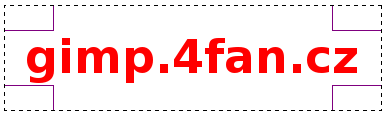

Web je již jen v režimu pro čtení a není možné přidávat nové komentáře nebo dotazy do fóra. Díky za přízeň.
Main menu
You are here
Razítko
6. August 2010 - 14:28 — Lukáš
- Napíšeme libovolný text červeným písmem Sans Bold.
- Vytvoříme novou vrstvu. Nazveme ji třeba Rámeček.
- Obdélníkovým výběrem obtáhneme text, tak aby byl zhruba uprostřed.
 - Zvolíme Vybrat → Obvod a nastavíme cca 5px, záleží na velikosti vašeho razítka.
- Výběr vyplníme také červenou barvou.
- Vrstvu Rámeček sloučíme s vrstvou s textem. (Vrstva → Sloučit dolů)
- Klepneme na Vybrat → Nic
- Nástrojem rotace [Shift + R] razítko pootočíme
- Vrstvě přidáme masku (Vrstva → Maska → Přidat masku)
- Barvu popředí nastavíme na černou. Vybereme nástroj štětec a stopu Confetti. Na razítko budeme touto stopou kreslit tak dlouho, dokud se nám výsledek nebude líbit.
- Hotovo :)
{kind=link}
{kind=link}
{kind=link}
{kind=link}
{kind=link}
{kind=link}
Kategorie:
Web je již ukončen. Nebude zde přibývat žádný nový obsah. Případné dotazy prosím na l.bacovsky(a)outlook.cz
Comments
Tak až do bodu č.9 jsem to
Bylo by lepší pro nás nějaké
až bude čas, video udělám ;)
Už nemusíte, už se mi to
Re: Razítko
Re: Razítko
Re: Razítko
Re: Razítko
Re: Razítko
Re: Razítko
Re: Razítko
Re: Razítko
Add new comment